Next:
References and further reading
Up:
Postings file compression
Previous:
Variable byte codes
Contents
Index
Gamma codes
Table 5.5: Some examples of unary and
 codes. Unary codes are only shown for the smaller numbers. Commas in
codes are for readability only and are not part of the actual codes.
codes. Unary codes are only shown for the smaller numbers. Commas in
codes are for readability only and are not part of the actual codes.
| |
number |
unary code |
length |
offset |
code |
|
| |
0 |
0 |
|
|
|
|
| |
1 |
10 |
0 |
|
0 |
|
| |
2 |
110 |
10 |
0 |
10,0 |
|
| |
3 |
1110 |
10 |
1 |
10,1 |
|
| |
4 |
11110 |
110 |
00 |
110,00 |
|
| |
9 |
1111111110 |
1110 |
001 |
1110,001 |
|
| |
13 |
|
1110 |
101 |
1110,101 |
|
| |
24 |
|
11110 |
1000 |
11110,1000 |
|
| |
511 |
|
111111110 |
11111111 |
111111110,11111111 |
|
| |
1025 |
|
11111111110 |
0000000001 |
11111111110,0000000001 |
|
VB codes use an adaptive number of bytes depending on the size of the gap. Bit-level codes adapt the length of the code on the finer grained bit level. The simplest bit-level code is unary code . The unary code of  is a string of 1s followed by a 0 (see the first two columns of Table 5.5 ). Obviously, this is not a very efficient code, but it will come in handy in a moment.
is a string of 1s followed by a 0 (see the first two columns of Table 5.5 ). Obviously, this is not a very efficient code, but it will come in handy in a moment.
How efficient can a code be in principle? Assuming the gaps  with
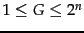 are all equally likely, the optimal encoding uses bits for each . So some gaps (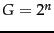 in this case) cannot be encoded with fewer than 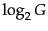 bits. Our goal is to get as close to this lower bound as possible.
with
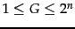 are all equally likely, the optimal encoding uses bits for each . So some gaps (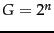 in this case) cannot be encoded with fewer than 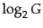 bits. Our goal is to get as close to this lower bound as possible.
A method that is within a factor of optimal is encoding . codes implement variable-length encoding by splitting the representation of a gap into a pair of length and offset. Offset is in binary, but with the leading 1 removed.![[*]](http://nlp.stanford.edu/IR-book/html/icons/footnote.png) For example, for 13 (binary 1101) offset is 101. Length encodes the length of offset in unary code. For 13, the length of offset is 3 bits, which is 1110 in unary. The code of 13 is therefore 1110101, the concatenation of length 1110 and offset 101. The right hand column of Table 5.5 gives additional examples of codes.
For example, for 13 (binary 1101) offset is 101. Length encodes the length of offset in unary code. For 13, the length of offset is 3 bits, which is 1110 in unary. The code of 13 is therefore 1110101, the concatenation of length 1110 and offset 101. The right hand column of Table 5.5 gives additional examples of codes.
A code is decoded by first reading the unary code up to the 0 that terminates it, for example, the four bits 1110 when decoding 1110101. Now we know how long the offset is: 3 bits. The offset 101 can then be read correctly and the 1 that was chopped off in encoding is prepended: 101 1101 = 13.
The length of offset is
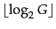 bits and the length of length is
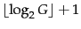 bits, so the length of the entire code is
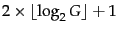 bits. codes are always of odd length and they are within a factor of 2 of what we claimed to be the optimal encoding length . We derived this optimum from the assumption that the gaps between  and are equiprobable. But this need not be the case. In general, we do not know the probability distribution over gaps a priori.
and are equiprobable. But this need not be the case. In general, we do not know the probability distribution over gaps a priori.
Figure 5.9: Entropy
 as a function of
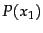 for a sample space with two outcomes
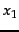 and
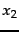.
as a function of
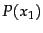 for a sample space with two outcomes
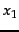 and
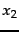.
| 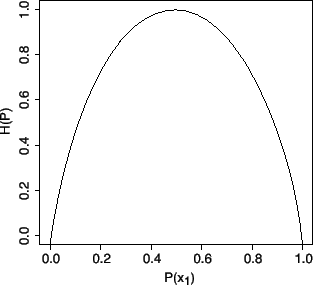 |
The characteristic of a discrete probability distribution
 that determines its coding properties (including whether a code is optimal) is its
entropy
, which is defined as follows:
that determines its coding properties (including whether a code is optimal) is its
entropy
, which is defined as follows:
where
 is the set of all possible numbers we need to be able to encode (and therefore
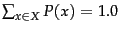). Entropy is a measure of uncertainty as shown in Figure
5.9 for a probability distribution
over two possible outcomes, namely,
is the set of all possible numbers we need to be able to encode (and therefore
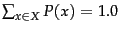). Entropy is a measure of uncertainty as shown in Figure
5.9 for a probability distribution
over two possible outcomes, namely,
 . Entropy is maximized (
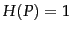) for
. Entropy is maximized (
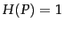) for
 when uncertainty about which
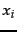 will appear next is largest; and minimized (
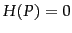) for
when uncertainty about which
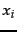 will appear next is largest; and minimized (
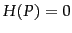) for
 and for
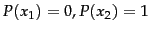 when there is absolute certainty.
and for
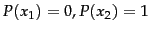 when there is absolute certainty.
It can be shown that the lower bound for the expected length 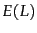 of a code  is if certain conditions hold (see the references). It can further be shown that for
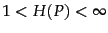, encoding is within a factor of 3 of this optimal encoding, approaching 2 for large :
is if certain conditions hold (see the references). It can further be shown that for
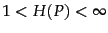, encoding is within a factor of 3 of this optimal encoding, approaching 2 for large :
 |
(5) |
What is remarkable about this result is that it holds for any probability distribution
. So without knowing anything about the properties of the distribution of gaps, we can apply
codes and be certain that they are within a factor of
 of the optimal code for distributions of large entropy. A code like
code with the property of being within a factor of optimal for an arbitrary distribution
is called
universal .
of the optimal code for distributions of large entropy. A code like
code with the property of being within a factor of optimal for an arbitrary distribution
is called
universal .
In addition to universality, codes have two other properties that are useful for index compression. First, they are prefix free , namely, no code is the prefix of another. This means that there is always a unique decoding of a sequence of codes - and we do not need delimiters between them, which would decrease the efficiency of the code. The second property is that codes are parameter free . For many other efficient codes, we have to fit the parameters of a model (e.g., the binomial distribution) to the distribution of gaps in the index. This complicates the implementation of compression and decompression. For instance, the parameters need to be stored and retrieved. And in dynamic indexing, the distribution of gaps can change, so that the original parameters are no longer appropriate. These problems are avoided with a parameter-free code.
How much compression of the inverted index do codes achieve? To answer this question we use Zipf's law, the term distribution model introduced in Section 5.1.2 . According to Zipf's law, the collection frequency 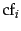 is proportional to the inverse of the rank  , that is, there is a constant such that:
, that is, there is a constant such that:
We can choose a different constant
 such that the fractions
such that the fractions
 are relative frequencies and sum to 1 (that is,
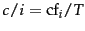):
are relative frequencies and sum to 1 (that is,
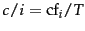):
| 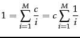 |
 |
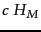 |
(7) |
| 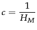 |
|
|
(8) |
where
 is the number of distinct terms and
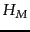 is the
th
harmonic number .
Reuters-RCV1 has
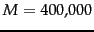 distinct terms and
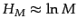, so we have
is the number of distinct terms and
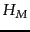 is the
th
harmonic number .
Reuters-RCV1 has
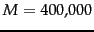 distinct terms and
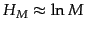, so we have
Thus the
th term has a relative frequency of roughly
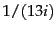, and the expected average number of occurrences of term
in a document of length
is:
 |
(10) |
where we interpret the relative frequency as a term occurrence probability. Recall that 200 is the average number of tokens per document in Reuters-RCV1 (Table
4.2 ).
Figure 5.10: Stratification of terms for estimating the size of a
encoded inverted index.
| 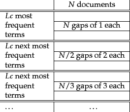 |
Now we have derived term statistics that characterize the distribution of terms in the collection and, by extension, the distribution of gaps in the postings lists. From these statistics, we can calculate the space requirements for an inverted index compressed with
encoding. We first stratify the vocabulary into blocks of size
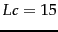. On average, term
occurs
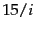 times per document. So the average number of occurrences
 per document is
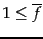 for terms in the first block, corresponding to a total number of
per document is
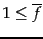 for terms in the first block, corresponding to a total number of
 gaps per term. The average is
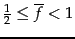 for terms in the second block, corresponding to
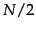 gaps per term, and
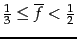 for terms in the third block, corresponding to
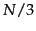 gaps per term, and so on. (We take the lower bound because it simplifies subsequent calculations. As we will see, the final estimate is too pessimistic, even with this assumption.) We will make the somewhat unrealistic assumption that all gaps for a given term have the same size as shown in Figure
5.10. Assuming such a uniform distribution of gaps, we then have gaps of size 1 in block 1, gaps of size 2 in block 2, and so on.
gaps per term. The average is
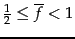 for terms in the second block, corresponding to
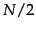 gaps per term, and
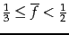 for terms in the third block, corresponding to
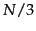 gaps per term, and so on. (We take the lower bound because it simplifies subsequent calculations. As we will see, the final estimate is too pessimistic, even with this assumption.) We will make the somewhat unrealistic assumption that all gaps for a given term have the same size as shown in Figure
5.10. Assuming such a uniform distribution of gaps, we then have gaps of size 1 in block 1, gaps of size 2 in block 2, and so on.
Encoding the 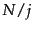 gaps of size  with codes, the number of bits needed for the postings list of a term in the th block (corresponding to one row in the figure) is:
with codes, the number of bits needed for the postings list of a term in the th block (corresponding to one row in the figure) is:
To encode the entire block, we need
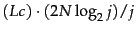 bits. There are
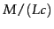 blocks, so the postings file as a whole will take up:
For Reuters-RCV1,
 400,000
400,000
 and
and
So the postings file of the compressed inverted index for our 960 MB collection has a size of 224 MB, one fourth the size of the original collection.
When we run compression on Reuters-RCV1, the actual size of the compressed index is even lower: 101 MB, a bit more than one tenth of the size of the collection. The reason for the discrepancy between predicted and actual value is that (i) Zipf's law is not a very good approximation of the actual distribution of term frequencies for Reuters-RCV1 and (ii) gaps are not uniform. The Zipf model predicts an index size of 251 MB for the unrounded numbers from Table 4.2 . If term frequencies are generated from the Zipf model and a compressed index is created for these artificial terms, then the compressed size is 254 MB. So to the extent that the assumptions about the distribution of term frequencies are accurate, the predictions of the model are correct.
Table: Index and dictionary compression for Reuters-RCV1. The compression ratio depends on the proportion of actual text in the collection. Reuters-RCV1 contains a large amount of XML markup. Using the two best compression schemes,
encoding and blocking with front coding, the ratio compressed index to collection size is therefore especially small for Reuters-RCV1:
 .
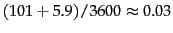.
.
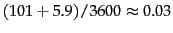.
| |
data structure |
size in MB |
| |
dictionary, fixed-width |
19.211.2 |
| |
dictionary, term pointers into string |
10.8 7.6 |
| |
, with blocking,  |
10.3 7.1 |
| |
, with blocking & front coding |
7.9 5.9 |
| |
collection (text, xml markup etc) |
3600.0 |
| |
collection (text) |
960.0 |
| |
term incidence matrix |
40,000.0 |
| |
postings, uncompressed (32-bit words) |
400.0 |
| |
postings, uncompressed (20 bits) |
250.0 |
| |
postings, variable byte encoded |
116.0 |
| |
postings, encoded |
101.0 |
Table 5.6 summarizes the compression techniques covered in this chapter. The term incidence matrix (Figure 1.1 , page 1.1 ) for Reuters-RCV1 has size
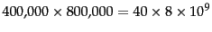 bits or 40 GB. The numbers were the collection (3600 MB and 960 MB) are for the encoding of RCV1 of CD, which uses one byte per character, not Unicode.
codes achieve great compression ratios - about 15% better than variable byte codes for Reuters-RCV1. But they are expensive to decode. This is because many bit-level operations - shifts and masks - are necessary to decode a sequence of codes as the boundaries between codes will usually be somewhere in the middle of a machine word. As a result, query processing is more expensive for codes than for variable byte codes. Whether we choose variable byte or encoding depends on the characteristics of an application, for example, on the relative weights we give to conserving disk space versus maximizing query response time.
The compression ratio for the index in Table 5.6 is about 25%: 400 MB (uncompressed, each posting stored as a 32-bit word) versus 101 MB () and 116 MB (VB). This shows that both and VB codes meet the objectives we stated in the beginning of the chapter. Index compression substantially improves time and space efficiency of indexes by reducing the amount of disk space needed, increasing the amount of information that can be kept in the cache, and speeding up data transfers from disk to memory.
Exercises.
- Compute variable byte codes for the numbers in Tables 5.3 5.5 .
- Compute variable byte and codes for the postings list
777, 17743, 294068, 31251336. Use gaps instead of docIDs where possible. Write binary codes in 8-bit blocks.
- Consider the postings list
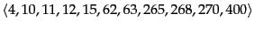 with a corresponding list of gaps
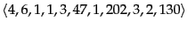. Assume that the length of the postings list is stored separately, so the system knows when a postings list is complete. Using variable byte encoding: (i) What is the largest gap you can encode in 1 byte? (ii) What is the largest gap you can encode in 2 bytes? (iii) How many bytes will the above postings list require under this encoding? (Count only space for encoding the sequence of numbers.)
- A little trick is to notice that a gap cannot be of length 0 and that the stuff left to encode after shifting cannot be 0. Based on these observations: (i) Suggest a modification to variable byte encoding that allows you to encode slightly larger gaps in the same amount of space. (ii) What is the largest gap you can encode in 1 byte? (iii) What is the largest gap you can encode in 2 bytes? (iv) How many bytes will the postings list in Exercise 5.3.2 require under this encoding? (Count only space for encoding the sequence of numbers.)
- From the following sequence of -coded gaps, reconstruct first the gap sequence and then the postings sequence: 1110001110101011111101101111011.
- codes are relatively inefficient for large numbers (e.g., 1025 in Table 5.5 ) as they encode the length of the offset in inefficient unary code.
 codes differ from codes in that they encode the first part of the code (length) in code instead of unary code. The encoding of offset is the same. For example, the code of 7 is 10,0,11 (again, we add commas for readability). 10,0 is the code for length (2 in this case) and the encoding of offset (11) is unchanged. (i) Compute the codes for the other numbers in Table 5.5 . For what range of numbers is the code shorter than the code? (ii) code beats variable byte code in Table 5.6 because the index contains stop words and thus many small gaps. Show that variable byte code is more compact if larger gaps dominate. (iii) Compare the compression ratios of code and variable byte code for a distribution of gaps dominated by large gaps.
codes differ from codes in that they encode the first part of the code (length) in code instead of unary code. The encoding of offset is the same. For example, the code of 7 is 10,0,11 (again, we add commas for readability). 10,0 is the code for length (2 in this case) and the encoding of offset (11) is unchanged. (i) Compute the codes for the other numbers in Table 5.5 . For what range of numbers is the code shorter than the code? (ii) code beats variable byte code in Table 5.6 because the index contains stop words and thus many small gaps. Show that variable byte code is more compact if larger gaps dominate. (iii) Compare the compression ratios of code and variable byte code for a distribution of gaps dominated by large gaps.
- Go through the above calculation of index size and explicitly state all the approximations that were made to arrive at Equation 11.
- For a collection of your choosing, determine the number of documents and terms and the average length of a document. (i) How large is the inverted index predicted to be by Equation 11? (ii) Implement an indexer that creates a -compressed inverted index for the collection. How large is the actual index? (iii) Implement an indexer that uses variable byte encoding. How large is the variable byte encoded index?
Table: Two gap sequences to be merged in blocked sort-based indexing
| |
encoded gap sequence of run 1 |
1110110111111001011111111110100011111001 |
|
| |
encoded gap sequence of run 2 |
11111010000111111000100011111110010000011111010101 |
|
- To be able to hold as many postings as possible in main memory, it is a good idea to compress intermediate index files during index construction. (i) This makes merging runs in blocked sort-based indexing more complicated. As an example, work out the -encoded merged sequence of the gaps in Table 5.7 . (ii) Index construction is more space efficient when using compression. Would you also expect it to be faster?
- (i) Show that the size of the vocabulary is finite according to Zipf's law and infinite according to Heaps' law. (ii) Can we derive Heaps' law from Zipf's law?
Next:
References and further reading
Up:
Postings file compression
Previous:
Variable byte codes
Contents
Index
© 2008 Cambridge University Press
This is an automatically generated page. In case of formatting errors you may want to look at the PDF edition of the book.
2009-04-07